الـــبـــحـــث

في مصر القديمة وبداخل الحدود الخاصة بحصن بابليون بشكل خاص بدأ وضع حجر الأساس الأول للمتحف القبطي، والذي بدأ تأسيسه لأول مرة في عهد الفرس، ثم توالت عليه العديد من العصور والحكام وتم إضافة مجموعة كبيرة من التعديلات والتغييرات على يد الرومانيين في عهد الإمبراطور تراجان والإمبراطور أغسطس. ثم أعقبهم العالم الفرنسي المعروف ماسبيرو، والذي كان له دور كبير في تاريخ نشأة وتأسيس المتحف القبطي، فهو من عمل على تجميع الأعمال الخاصة بالفنون القبطية القديمة وليس هذا فحسب، بل نادى بتخصيص قاعة كاملة للفن القبطي داخل المتحف المصري. وفي عام 1893 ميلادية قام مرقس باشا سميكة بالمطالبة بضم جميع الآثار القبطية إلى لجنة المحافظة على الآثار والفنون وتمكينه من بناء متحف قائم ومستقل لضم الآثار والفنون القبطية القديمة، حتى أنه نجح بالفعل في إنشاء المبنى الحالي المعروف باسم المتحف القبطي، ثم افتتاحه عام 1910، وتم تعيينه كأول مدير إداري للمتحف.
دائمًا ما يقال أن مصر هي مهد الحضارة ومن أهم الحضارات التي احتضنتها مصر هي الحضارة القبطية والمتمثلة في مجموعة الآثار التي يضمها متحفنا القبطي الرائع، ومن أبرز المعلومات المتعلقة بهذا المتحف ما يلي
بفضل احتوائه على العديد من الآثار القبطية القديمة، أصبح للمتحف القبطي أكبر متحف للفنون والآثار القبطية الموجودة على مستوى العالم، وأهم الأقسام التي يضمها المتحف ما يلي
قطعة من نسيج القباطي في وسطها زخرف الفارس وفي الأركان الأربعة محاربين على خلفية من الزخارف النباتية. القرن 5 م
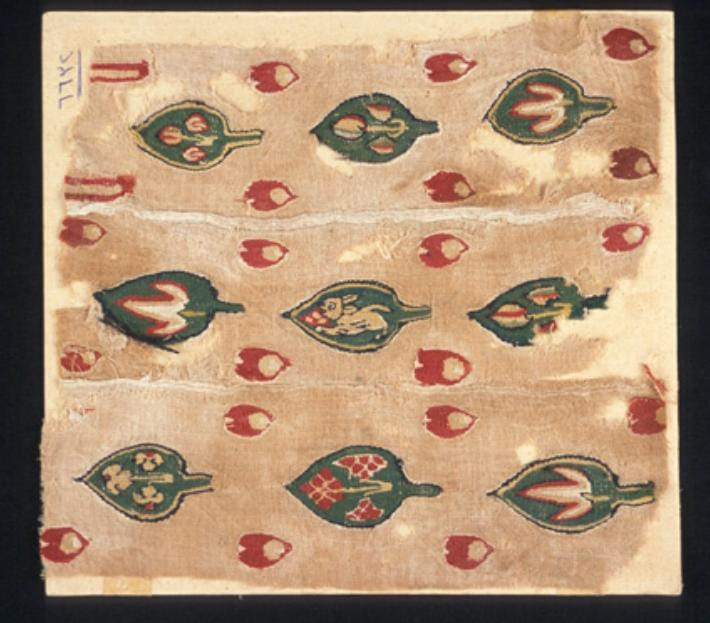قطعة من نسيج كتاني مزخرفة بمجموعة من الزخارف النباتية باللون الأخضر، يتوسط هذه الزخارف بعض الرموز المسيحية مثل الأرنب (رمز تجنب الخطيئة)، الحمامة (رمز الروح القدس)، عناقيد العنب (رمز لدم السيد المسيح) . ترجع هذه القطع إلى فترة انتشار الرموز المسيحية في النسيج والتي ترجع إلى القرن الخامس الميلادي.
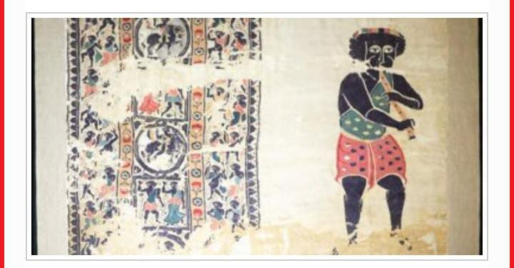قطعة أثرية وهى ستارة تصور زمارًا، مصنوعة من الكتان والصوف، والقطعة تعود إلى القرن الرابع أو الخامس الميلادى، حيث نستعرض بشكل مستمر قطعة مع صورتها وبعض المعلومات عن تلك القطعة ومكان عرضها، إلى جانب العصر الذى تنتميه.
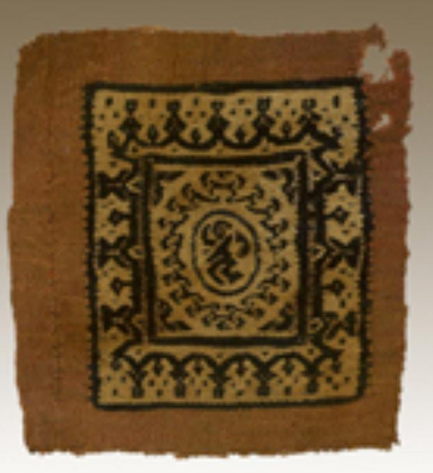قطعة من النسيج الصوفي المنسوج على الطراز "القبَّاطي" التقليدي، وهو من الطرز المميزة التي اشتهرت بها مصر في العصر المسيحي، وعُرف بالقبَّاطي نسبة إلى أقباط مصر، وكان ينسج على نول بدون طبع أو تطريز. ويذكر أن "المقوقس" حاكم مصر أهدى الرسول ثيابًا من النسيج القبَّاطي. يتوسط القطعة مربعان، المسافة الواقعة بينهما تشغلها الفستونات التي يتدلى منها بعض الحلي أو الأشكال الهندسية. وفي منتصف القطعة صُوِّر شخص راقص مُحاط بزخارف هندسية. وترجع هذه القطعة إلى مرحلة انتشار الموضوعات الوثنية القديمة من منتصف القرن الثالث إلى منتصف القرن الرابع الميلادي تقريبًا.
افتتح المتحف القبطي عام 1908، ويحتوي على مجموعة واسعة من القطع الأثرية المسيحية المبكرة، بما في ذلك مجموعة كبيرة من الأحجار المنحوتة. *المجموعة* يضم قسم الأحجار أكثر من 300 قطعة أثرية، بما في ذلك: * *شواهد القبور:* تُعد شواهد القبور أكثر أنواع الأحجار شيوعًا في المجموعة، وهي مصممة بأشكال مختلفة بما في ذلك الأبراج والمثلثات والدوائر. * *اللوحات الجدارية:* هذه الألواح مصنوعة من الحجر الجيري أو الرخام، وتحتوي على نقوش أو رسومات تصور مشاهد من الكتاب المقدس أو حياة المسيح. * *المذابح:* هناك العديد من المذابح الحجرية في المجموعة، وهي عادة ما تكون مزينة بالصلبان أو النقوش المسيحية الأخرى. * *التماثيل:* يوجد عدد قليل من التماثيل الحجرية في المجموعة، بما في ذلك تماثيل القديسين والملائكة. *الأنماط الفنية* تتراوح أنماط الأحجار المنحوتة من الواقعية إلى التجريدية. وتتميز القطع المبكرة بتأثيرات مصرية وثنية، بينما تتأثر القطع اللاحقة بأساليب فنية بيزنطية وإسلامية. *التاريخ والتأثير* توفر الأحجار المنحوتة في المتحف القبطي نظرة ثاقبة حول تاريخ المسيحية المبكرة في مصر. وهي توثق تطور الفن المسيحي وتأثيره على الثقافات المحيطة. *الأهمية* يعد قسم الأحجار في المتحف القبطي مجموعة مهمة من القطع الأثرية التي توفر رؤى قيمة حول حياة وعقائد المسيحيين الأوائل في مصر. كما تعد دليلاً على المهارة الفنية للحرفيين المسيحيين الأوائل.
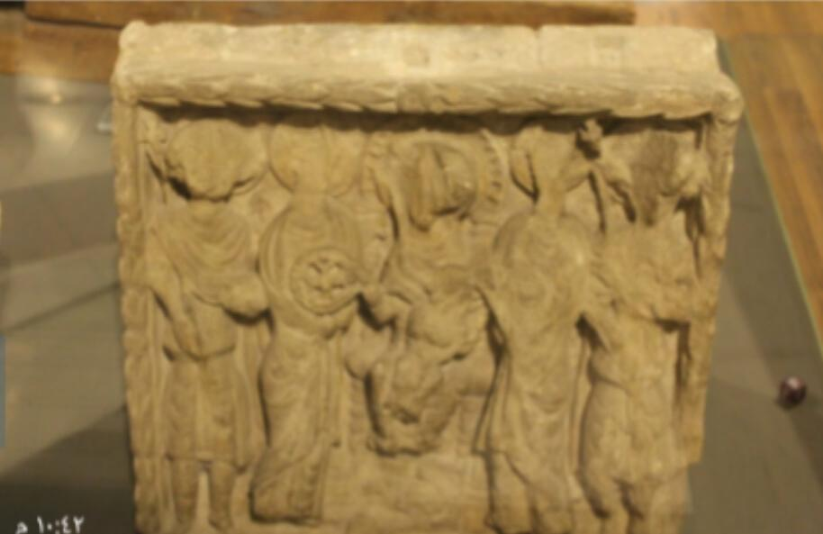1- لوح رخامي عليه نقوش بارزة تصور السيد المسيح والرسل الاثني عشر. 2- تمثال للسيد المسيح مصنوع من الحجر الجيري. 3- لوحة خشبية عليها نقوش بارزة تصور أحداث من العهد القديم والجديد.
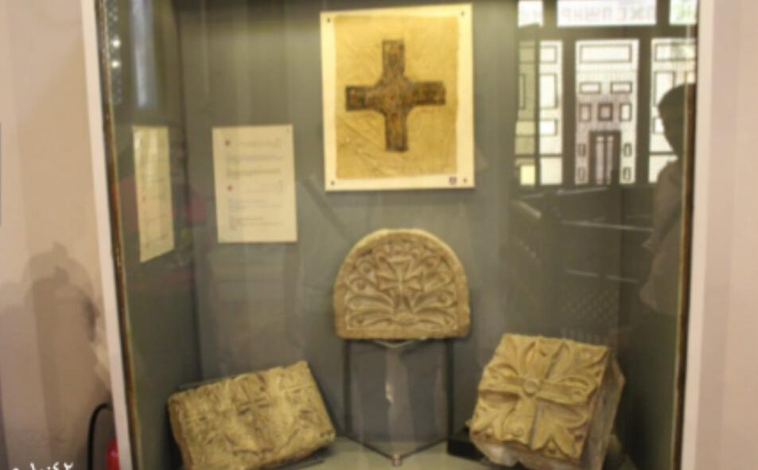الصورة هي لأيقونة خشبية منحوتة تصور المسيح على الصليب، يعود تاريخها إلى القرن السادس الميلادي
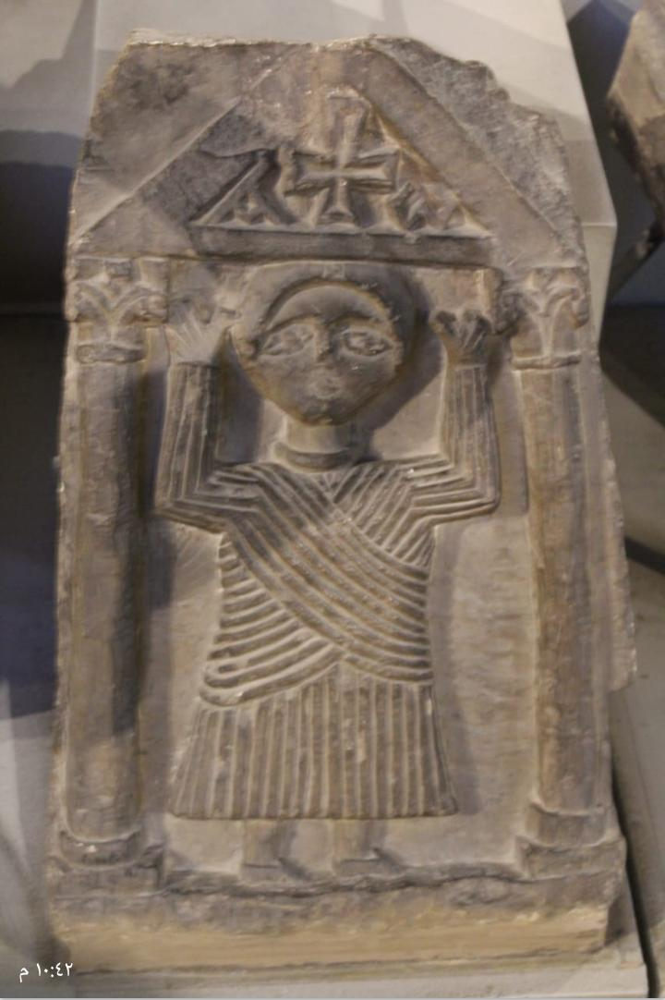هذه صورة لـ إله آشوري قديم اسمه آشور وهو واقف بين عمودين ويرتدي ثوب طويل مخطط ويمسك بيديه رمز الآلهة الآشورية القديمة .
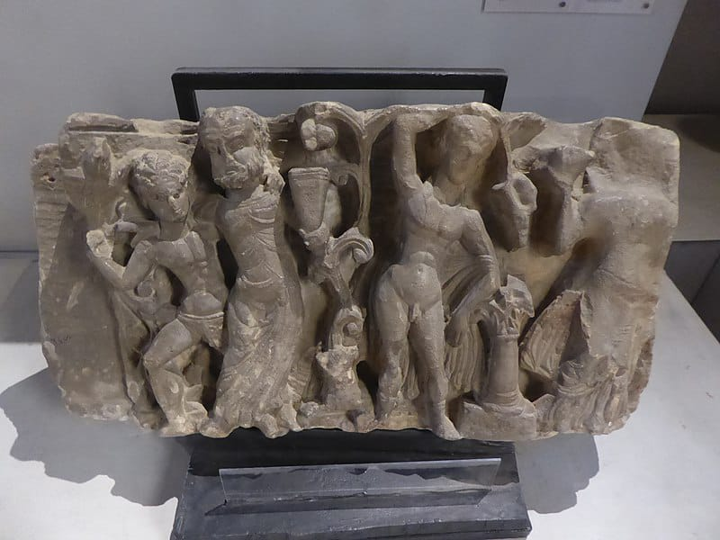مكان الأثر المتحف القبطى بمصر القديمة القاهرة يرجع نحت هذا الحجر إلى القرن الثالث الميلادى المادة المصنوع منها الأثر : حجر جيرى جزء من عتب على شكل الإله ديونيسوس إله الخمر وسط أصحابه والإله يونيسيوس عرف فى الأساطير الرومانية بأسم "باكوس" إبن الإله زيوس إله الآلهة وكان يرعى من يزرع العنب وشاربى الخمر وعصير العنب ويظهر فى آثار تلك الفترة برجل يمسك كأساً بيده وأحياناً يظهر بمنظر رجل متوج بفروع العنب ويقف وسط الأفرع المحملة بالعناقيد
الأخشاب مهر النجارون الأقباط في إخراج الأدوات المستعملة في الحياة اليومية وقطع النحت الخشبية وكانت الأخشاب المستوردة مثل البقس والأرز والأبنوس والصنوبر تستعمل في أعمال التجارة الدقيقة والهامة، ومثل هذه الأنواع من الأخشاب الباهظة التكلفة كانت تستخدم في الاسكندرية والمدن الكبرى ، أما الأخشاب المحلية مثل الأثل والسنط والجميز واللبخ والنبق والصلصات فكالات كم تعمل على نطاق واسع في عموم مصر . واشتهرت بابليون ( مصر القديمة ( ومدينة التيلوي عبادة ) وباويط وأخميم بفن نجارة الأخشاب . كانت الكنائس والأديرة مزدانة براونع من الاختبار المتحولة . وزخرفت الأعتاب العليا والأبواب والعشوات والأفاريز بالمناظر التي تمثل القديسين والمناظر المستمدة من العهدين القديم والجديد، ويزخارف نباتية وحيوانية وهندسية ، وتلقى التحف الخشبية الصغيرة ضوءا على الكثير من مظاهر الحياة اليومية وتذكر منها أدوات الزينة الأمة والعلب الصغيرة والدمي والمغازل والأختام والأدوات الموسيقية.
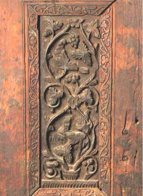ومن أشهر مقتنيات هذا المتحف أيضا ثلاث قطع من الأخشاب لها أهميتها القصوى في دراسة فن النحت فيما بين القرنين الرابع والسادس ، وهي باب كنسية القديسة بربارة ، ومذبح كنيسة القديسين سرجيوس وواخس ، وعتبة عليا كانت تزين أحد أبواب الكنيسة المعلقة ، وهناك بعض الآثار الخشبية
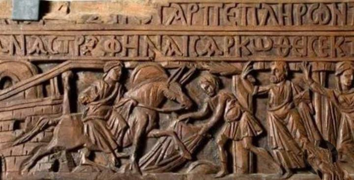المتحف القبطي يعرض قطعة خشبية لـ أحد السعف قطعة خشبية لأحدأخبارقطعة خشبية لأحد السعف مينا صلاح السبت 16/أبريل/2022 - 06:11 م أضف للمفضلة شارك تزينت الكنائس اليوم السبت، بسعف النخيل وأغصان الزيتون، وذلك استعدادًا للاحتفال بعيد أحد السعف أو أحد الشعانين، والذي يعد عيد تذكار دخول السيد المسيح مدينة أورشليم، حيث استقبلته المدينة بالورود وسعف وجريد النخيل، للتعبير عن فرحهم بدخوله البلاد. قطعة خشبية لأحد السعف وفي هذا الصدد يعرض المتحف القبطي بمنطقة مصر القديمة، قطعة رقم 753 من خشب الجميز وهي من عتب الكنيسة المعلقة، وعلى القطعة نقوش بارزة تمثل منظرين من العهد الجديد: دخول السيد المسيح إلى أورشليم والصعود وأعلى المنظر أربعة أسطر غير كاملة من الكتابة اليونانية، وقد صور السيد المسيح ممتطيًا جحشًا، وبينما يفرش رجل عباءة أمام الجحش، يرحب آخر خلفه بالسيد المسيح ملوحًا بسعف النخيل. وفى منظر الصعود يظهر السيد المسيح جالسًا على العرش داخل هالة المجد التي يمسك بها ملاكان، ويكتنفها الرسل، واللوحة تم نقشها ف
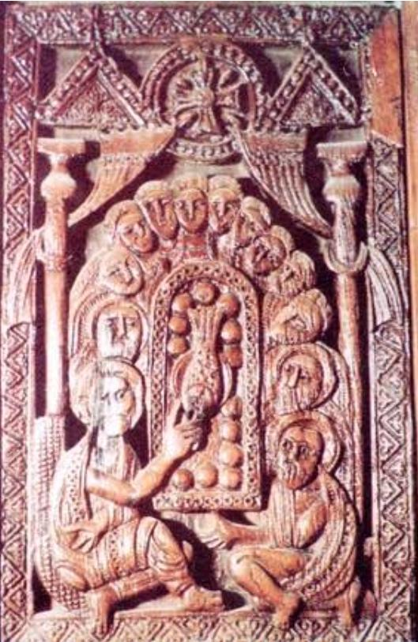مكان الأثر المتحف القبطى بمصر القديمة القاهرة وترجع صناعة هذا الباب الخشبى فى كنيسة القديسة بربارة للقرن 4 االمادة : الخشب باب ذو مصراعين به نقوش تمثل نقوش الحشوتين العلويتين فى واجهة الباب صورة نصفية للسيد المسيح داخل إكليل نزدان بشريط يحمله ملاكان يحلقان ، ويحف بالملاكين شخصان من المحتمل ان يكونا رسولان إنجيليان يقف كل منهما تجاه عمود بستارة ، يظهر على الحشوات الأخرى السيد المسيح داخل عاله المجد ، القديسة العذراء والأثنا عشر رسولاً ، أما الحشوات الخلفية فمنقوشة بوخارف مكونة من زهريات تخرج منها أفرع الكرم الملفوفة المورقة المثمرة
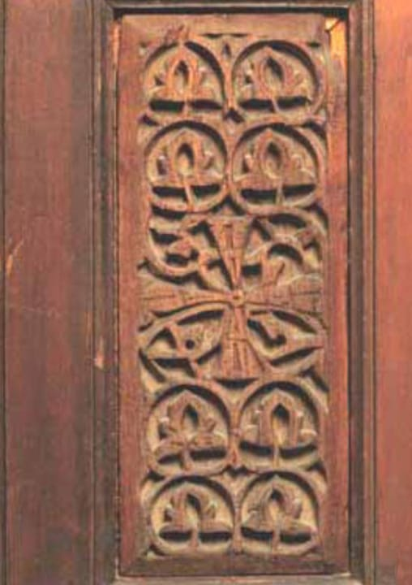مكان الأثر المتحف القبطى بمصر القديمة القاهرة وترجع صناعة هذا الباب الخشبى لإحدى الكنائس للقرن 5 االمادة : الخشب حشو من مصراع باب مستطيلة الشكل ، مزخرفة بنقوش نباتية تمثل أفرع أغصان وأوراق العنب يتوسطها صليب.
تحتوي القاعات 22 و 23 من المتحف القبطي على مجموعة غنية من الذهب والفضة والنحاس والبرونز والحديد من القرن الثالث إلى القرن التاسع عشر الميلادي.
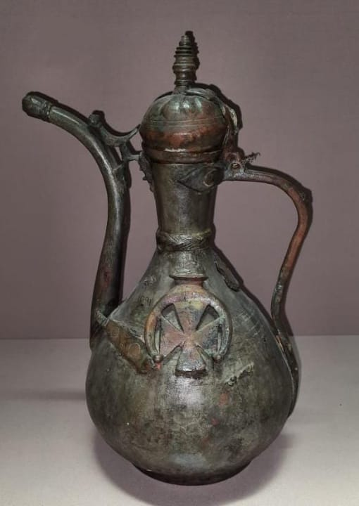أبريق من البرونز ذو فوهة ومقبض وبه غطاء
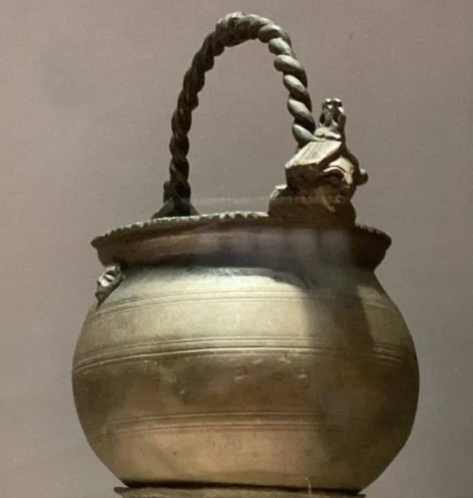أبريق من البرونز ذو فوهة ومقبض وبه غطاء، الأبريق عليه زخارف لصليب داخل شكل نصف دائرة، وبالقرب من الفوهة يوجد طائر.
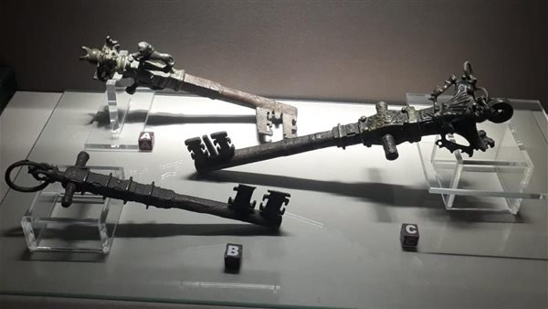مفاتيح ضخمة لبوابات خشبية والقطعة التي يعرضها المتحف عبارة عن 3 مفاتيح ضخمة لبوابات خشبية، زُين اثنان منهما على شكل تاج عمود كورنثي بينما زُين الثالث على شكل صليب.
جروب المهرجان الكرازة 2024
اضغط هناا